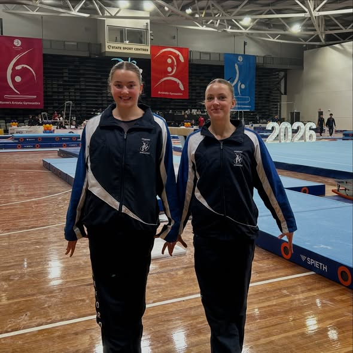
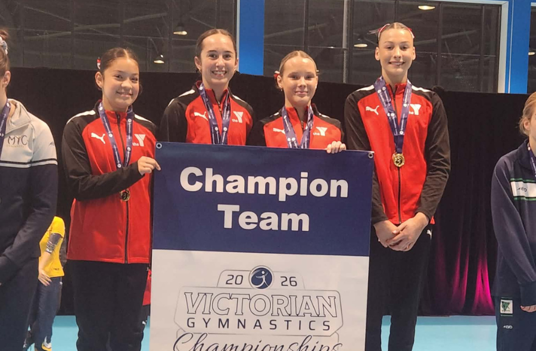
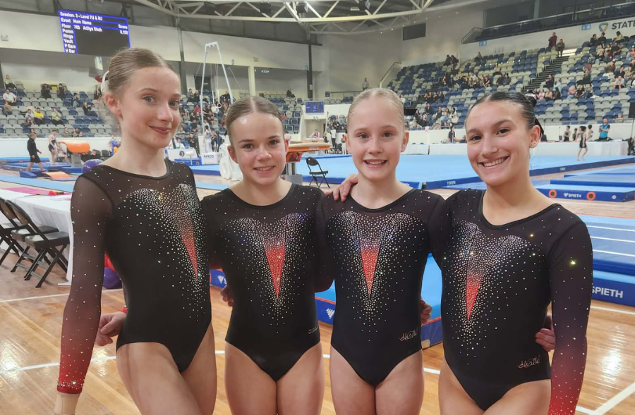

Women's Artistic Gymnastics
The Senior Victorian Championships ran across three days at Melbourne Sports Centres – Parkville from 22–24 May, with sessions spanning Level 8 through to the elite international levels. For many athletes, this was the biggest competition of the season, and with national selections on the line, every tenth of a point mattered.
The closest finish of the season
It was a rough day at the office for Level 10 Division 1. Falls on beam and vault were a feature of the session across the field, the pressure clearly getting to more than a few athletes. One Knox coach noted afterwards that the shaky performances were probably no coincidence, with nationals selection on the line.
When the scores were tallied, it came down to just 0.033 points, Maddie Smith of Cheltenham Youth Club claiming the title at 50.199 over BTYC Gymnastics' Annabella Geraghty at 50.166.
The scoreline told a counterintuitive story. Geraghty actually outscored Smith on three of the four events: vault (13.2 vs 13.1), bars (12.5 vs 12.2), and floor (13.433 vs 12.766). But Smith's beam was in a class of its own, 12.133 to Geraghty's 11.033, a full point of separation on a single apparatus. That margin was the championship.
A full point on beam. Across just four events, that was the margin that decided the championship.
| # | Athlete | Club | VT | UB | BB | FX | Total |
|---|---|---|---|---|---|---|---|
| 1 | Maddie Smith | Cheltenham Youth Club | 13.100 | 12.200 | 12.133 | 12.766 | 50.199 |
| 2 | Annabella Geraghty | BTYC Gymnastics | 13.200 | 12.500 | 11.033 | 13.433 | 50.166 |
| 3 | Isobel Vagg | YMCA Geelong Gymnastics Club | 13.166 | 12.233 | 11.533 | 12.933 | 49.865 |
| 4 | Vivian Bayles | YMCA Geelong Gymnastics Club | 13.100 | 11.666 | 11.833 | 12.933 | 49.532 |
| 5 | Olina Karatzias | Waverley Gymnastics Centre | 14.000 | 11.733 | 11.933 | 11.633 | 49.299 |
YMCA Geelong Gymnastics Club placed two athletes in the top four, Isobel Vagg at 49.865 and Vivian Bayles at 49.532, a result that also contributed to YMCA Geelong taking the Level 10 team title.
Estelle Warnes, unbeaten in 2026
Chamford's Estelle Warnes has yet to taste defeat in 2026. Winning the Level 9 Division 1 all-around with 49.633, Warnes held off a strong challenge from Shae O'Brien of Melbourne Acrobatic Gymnastics Academy (49.282), a gap of just 0.351 points between the two session winners.
Warnes' progression through 2026 has been remarkable. She opened at the Knox Senior WAG Invitational in March with 46.950, climbed to 48.350 at the BTYC MAG and WAG Senior Extravaganza, reached 48.799 at State Trial 1, and peaked at 49.633 here, a gain of 2.683 points over ten weeks with a win every time out. Chamford teammate Lexi Thomas finished in the top two in the same session.
| # | Athlete | Club | VT | UB | BB | FX | Total |
|---|---|---|---|---|---|---|---|
| 1 | Estelle Warnes | Chamford Gymnastics | 13.400 | 12.133 | 12.400 | 11.700 | 49.633 |
| 2 | Shae O'Brien | Melbourne Acrobatic Gymnastics Academy | 13.466 | 11.866 | 12.250 | 11.700 | 49.282 |
| 3 | Jessica Terry | Melbourne Gymnastics Centre | 13.100 | 11.433 | 12.350 | 11.966 | 48.849 |
| 4 | Ella McGrath | Athleta Gymnastics | 12.333 | 12.900 | 11.900 | 11.633 | 48.766 |
| 5 | Leah Boulos | BTYC Gymnastics | 12.933 | 11.966 | 11.550 | 11.900 | 48.349 |
In Level 9 Division 2, Myah Johnston of Eureka Gymnastics Club took the title with 44.900.

Level 8, two sessions, two champions
Level 8 ran across multiple sessions and two divisions, each producing its own champion. In Division 1, Skylar Poliquit of Melbourne Acrobatic Gymnastics Academy won her session at 47.950, while Ivy Alford of YMCA Geelong Gymnastics Club took hers at 47.816. Division 2 was dominated by Cheltenham Youth Club: Mia Anderson won her session at 45.899 with club teammate Zali Chippindall right behind in second at 44.399, while in the other Division 2 session Sienna Kam of BTYC Gymnastics claimed top spot at 43.516. Away from the standard medals, Cheltenham's Samantha Kemp received the Cassie Manners Memorial Beam Artistry Award, a special recognition for outstanding artistry on beam.

The elite levels: Waverley and YMCA Geelong share the spoils
If there was a single score that defined the elite end of the competition, it was Emily Whitehead's 52.700 in Senior International, the highest all-around score of the entire weekend across every level and every session. Whitehead, competing for Waverley Gymnastics Centre, did it without a weakness: vault 13.0, bars 13.35, beam 13.2, floor 13.15. Waverley also swept the Senior International podium, with Romi Brown (49.300) and Audrey Hawkins (48.750) rounding out the top three, and took the Senior International team title.
In Developing International 16+, Abigail Thom (Waverley) won at 45.500. In Developing International, Olivia Meaney of YMCA Geelong Gymnastics Club took the title at 49.700, another contribution to YMCA Geelong's strong overall showing across the weekend.
The most dramatic individual improvement of the competition came in Future International. Lucy Riddle of YMCA Geelong won with 50.350, a score that arrived just four weeks after she had posted 46.100 at State Trial 1. That is a 4.25-point single-month leap, and it propelled Riddle from fifth at the Trial to outright champion here. Waverley's Paige Hum was close behind at 49.950.

Team competition
YMCA Geelong Gymnastics Club was the standout club of the WAG team competition, claiming titles at both Level 8 Division 1 (140.232, ahead of BTYC at 139.166 and MLC at 139.149 in a very tight top three) and Level 10 Division 1 (149.228). Cheltenham Youth Club won the Level 8 Division 2 team title at 134.014. BTYC took the Level 9 Division 1 team title at 137.147, while Melbourne Acrobatic Gymnastics Academy edged out Waverley Gymnastics Centre in Level 9 Division 2, 129.998 to 129.231, with Essendon Keilor Gym Academy close behind at 128.364.
Waverley dominated the international levels team competition, winning Future International (147.700) and Senior International (152.400). The Developing International team was the closest contest of the weekend, Melbourne Gymnastics Centre holding off Waverley by just 0.1 points, 134.250 to 134.150.
We were at the Sunday afternoon session to photograph the competition. Browse the gallery: